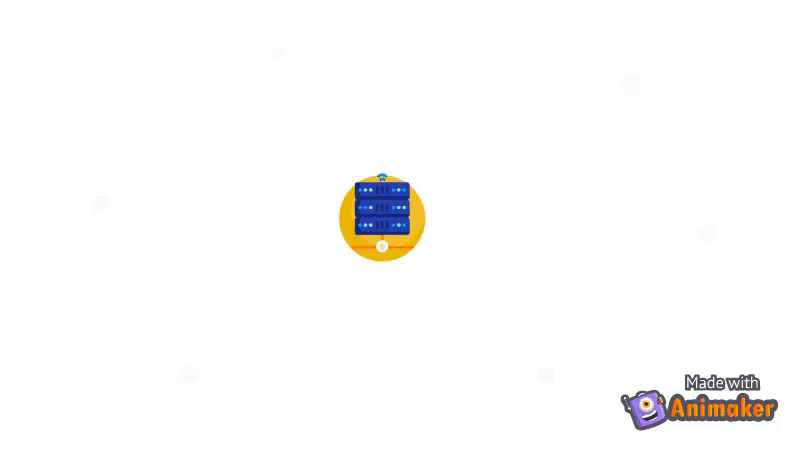

Javier Cabrera Arteaga

Lindstedtsvägen 3, Level 5, Office 1547
KTH Campus, Stockholm, Sweden
I am a PhD student at KTH Royal Institute of Technology, more specifically, I am doing Software Randomization for Security. I am a team member of the Trustworthy Fullstack Computing (TRUSTFULL) project.

Publications
2021
- MADWeb 2021
2020
- MoreVM’s 2020In Conference Companion of the 4th International Conference on Art, Science, and Engineering of Programming 2020
2019
- VMIL 2019In Proceedings of the 11th ACM SIGPLAN International Workshop on Virtual Machines and Intermediate Languages 2019